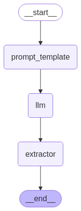

from typing import Iterator from langchain_deepseek import ChatDeepSeek from langchain_core.messages import BaseMessage, BaseMessageChunk from langchain_core.prompts import ChatPromptTemplate
model = ChatDeepSeek(model = 'deepseek-chat') prompt_template = ChatPromptTemplate([ ('system', '你是一个 AI 翻译助手，你负责把用户输入的内容从 {input_lang} 翻译成 {output_lang}'), ('human', '{text}') ])
display(another_translate.invoke({'input_lang': 'english', 'output_lang': 'chinese', 'text': 'Hello, World!'})) for chunk in another_translate.stream({'input_lang': 'english', 'output_lang': 'chinese', 'text': 'Where there is a supression, there is a struggle. Break the Chain!'}): print(chunk, end = ' | ')
from langgraph.graph import StateGraph, MessagesState, START from typing import TypedDict, Annotated from langgraph.types import StreamWriter from IPython.display import Image
app = graph.compile() display(Image(app.get_graph().draw_mermaid_png())) # stream_mode 可以传多个值，这样便能够同时显示 LLM 的 Chunk 和状态变迁 # 每个 stream_mode，对应的值（data）的类型都是 stream_mode 为相应值时的类型 # 如 stream_mode 为 messages 时，data 是一个二元组 (AIMessageChunk, metadata) ，metadata 表示是哪一步的 llm 的输出 # 如 stream_mode 为 values 时，data 就是图的状态 for stream_mode, data in app.stream({'input_lang': 'english', 'output_lang': 'chinese', 'text': 'Where there is a supression, there is a struggle. Break the Chain!'}, stream_mode=['messages', 'values']): if stream_mode == 'messages': # LLM chunk print(data[0].content, end = ' | ') elif'translation'in data: # state print('\nresult:', data['translation'])

| 哪里有 | 压迫 | ， | 哪里 | 就有 | 反抗 | 。 | 打破 | 枷 | 锁 | ！ | | result: 哪里有压迫，哪里就有反抗。打破枷锁！
The Kernel crashed while executing code in the current cell or a previous cell.
Please review the code in the cell(s) to identify a possible cause of the failure.
Click <a href='https://aka.ms/vscodeJupyterKernelCrash'>here</a> for more info.
View Jupyter <a href='command:jupyter.viewOutput'>log</a> for further details.